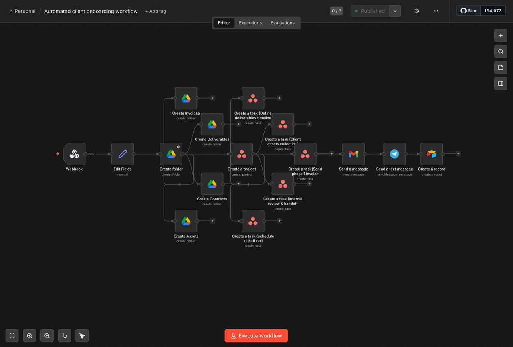

Automated Client Onboarding Workflow
n8n
API Integration
Automation
What it is: A backend automation pipeline designed to make the client welcome experience completely hands-off.
How it works: Engineered on n8n to connect multiple platforms. The moment a new client signs up, the workflow automatically triggers a sequence that creates user accounts, updates the database, and sends personalized introductory emails.